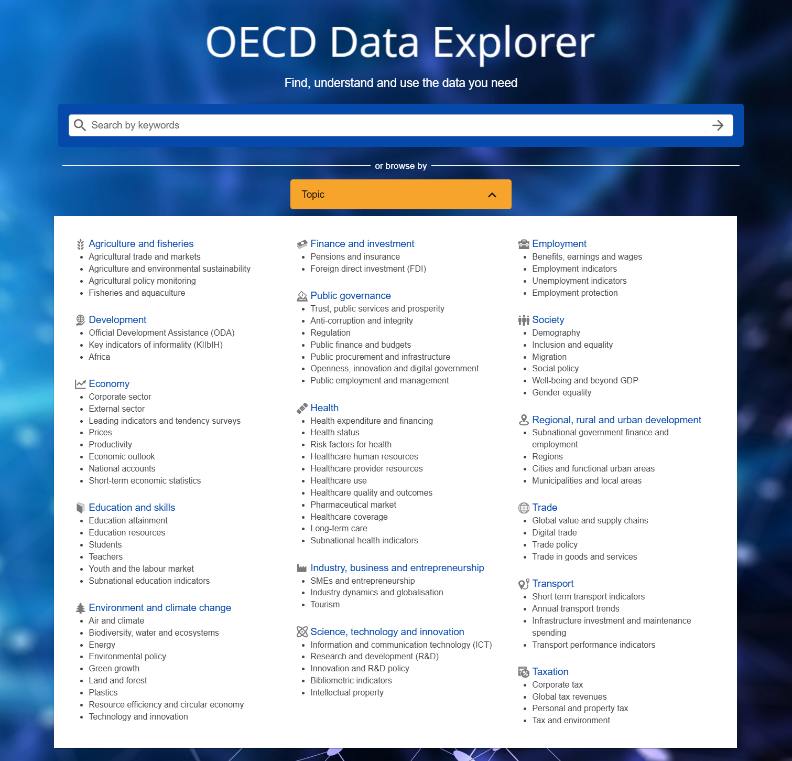
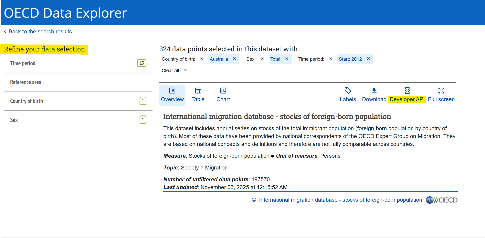
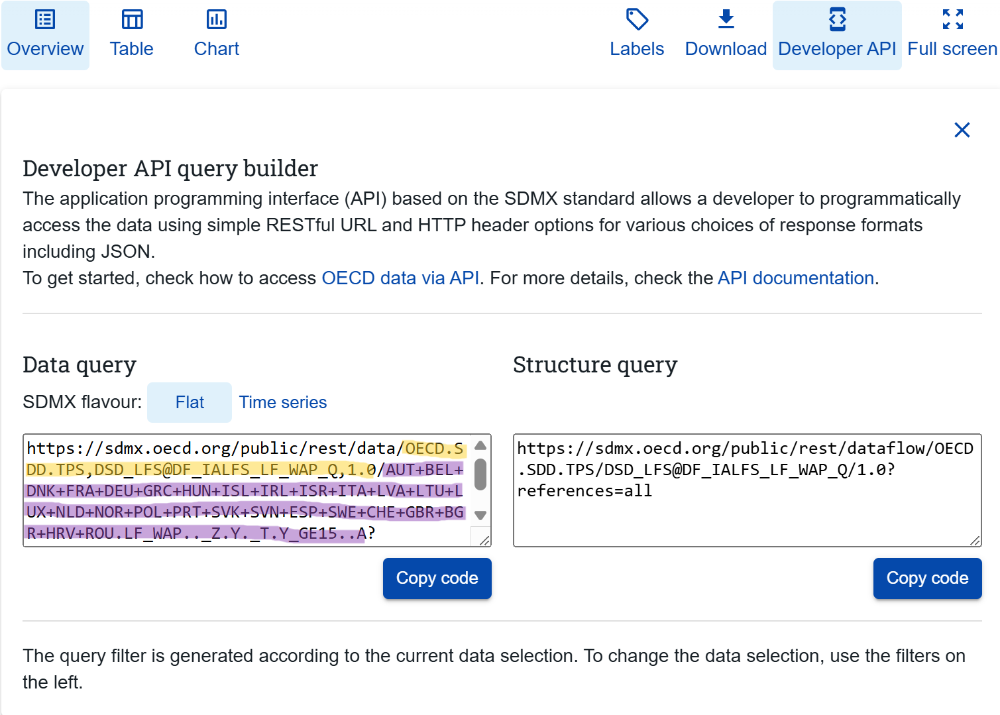
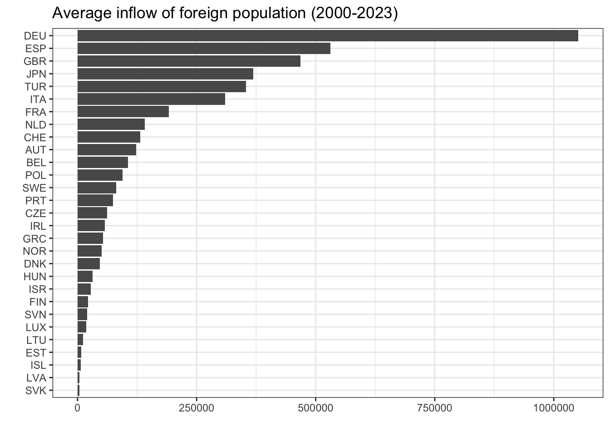
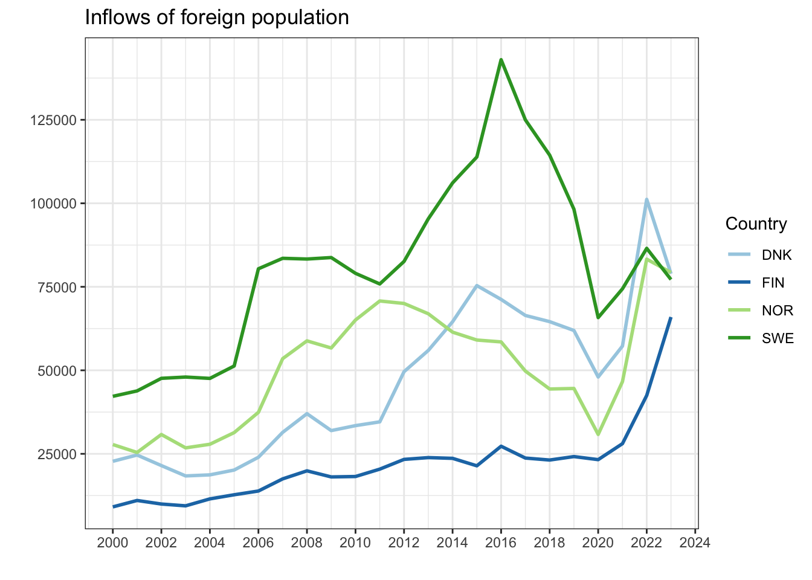
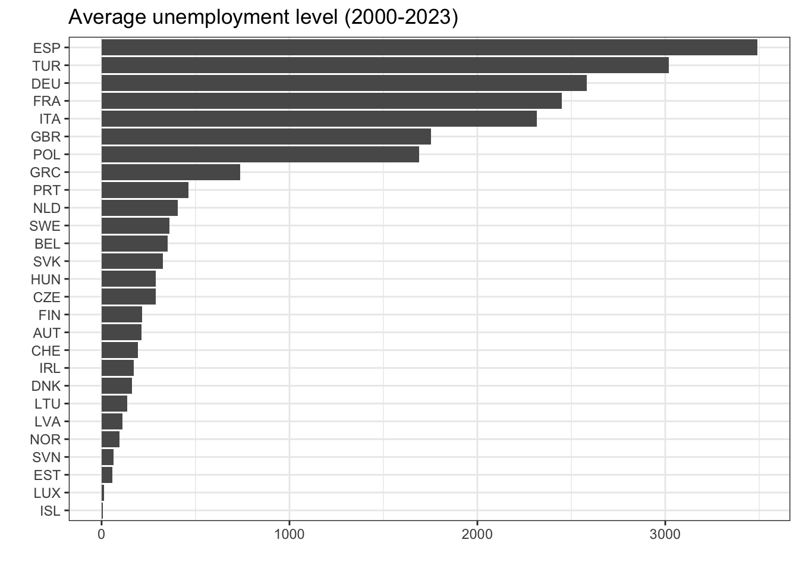
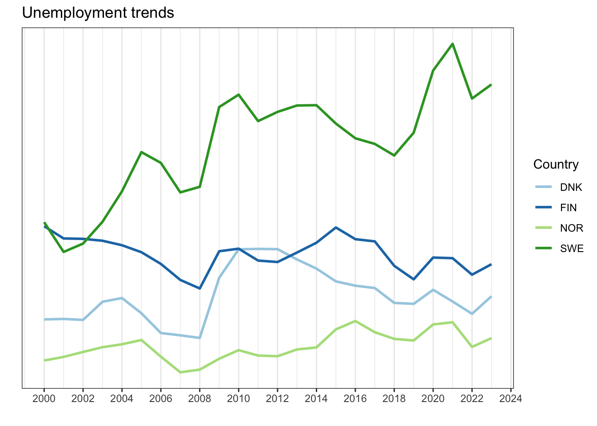

#devtools::install_github("expersso/OECD")
library(OECD)
library(tidyverse)What is the OECD?
The Organisation for Economic Co-operation and Development (OECD) is an international organisation that provides data and research aimed at finding solutions to social, economic, and environmental challenges. It is one of the world’s largest and widely used sources of comparative data 1.
How to import data from the OECD to R
This post provides a step-by-step guide to importing datasets from the OECD into R using the OECD package, from locating a dataset in the OECD Data Explorer to preparing the data for analysis and creating simple graphs.
To make it clear which parts are universal across datasets and which may vary, the full process is demonstrated twice: once using a migration dataset and once using an unemployment dataset. The two examples are presented side by side, with each step first shown for the migration data and then repeated for the unemployment data.
Step 1: Install and load the necessary packages
First you need to install and load the OECD package2, which allows you to retrieve data directly from the OECD API into R. You will also need to load the tidyverse package.
Step 2: Find a dataset using the OECD Data Explorer
The OECD Data Explorer provides access to a wide range of data, including topics such as employment, migration, international trade, and economic outlook 3. The datasets are sorted by category, and it is also possible to search for specific topics using keywords.

The datasets included in this tutorial are the International migration dataset 4 and the Labour force participation rate dataset 5
Step 3: Import the dataset into R

The next step, once you have found a dataset, is to filter the data under the “Refine your data selection”.
In both examples below, only European countries were selected under Reference area (these must be chosen manually one by one). For Sex, only “Total” was selected. The filters included under “Refine your data selection” vary between datasets, so your selection may differ depending on which dataset you use.
It is important not to select overlapping categories, because doing so can lead to the same observations being included multiple times. For example, in the Labour force participation rate dataset, choosing both “15 years or over” and “From 15 to 54 years” would cause all respondents aged 15-54 to be included twice. A similar issue occurs in the International migration dataset when filtering by citizenship if you select both individual countries one by one and “World”, as “World” already represents a selection of all countries.
After refining the data selection, copy the links provided under Developer API into R. You will need two links: one containing information about what dataset you want, and one containing information about what filters you just refined by. Below, the dataset link is highlighted in yellow (between / and /), and the filters link is highlighted in purple (between / and ?). These two links will allow you to import the dataset into R with the selected filters.

Import Migration dataset
Back in R after filtering the data in the Data Portal, you first have to paste both the dataset ID link and the filter link you just found under Developer API into R:
dataset_mig <- "OECD.ELS.IMD,DSD_MIG@DF_MIG,1.0"
filter_mig <- "BEL+CZE+DNK+EST+FIN+FRA+DEU+GRC+HUN+ISL+IRL+ITA+JPN+LVA+LTU+LUX+NLD+NOR+POL+PRT+SVK+SVN+ESP+SWE+CHE+TUR+GBR+ISR+AUT.W.A.B11._T..."Next, import the dataset using the get_dataset() function that comes with the OECD package:
migdat <- labelled::unlabelled(get_dataset(dataset_mig, filter_mig))Import unemployment dataset
Now, we do the exact same thing for the unemployment data. Paste the links from the Developer API into R:
dataset_unemp <- "OECD.SDD.TPS,DSD_LFS@DF_IALFS_UNE_Q,1.0"
filter_unemp <- "AUT+BEL+CZE+DNK+EST+FIN+FRA+DEU+GRC+HUN+ISL+IRL+ITA+LVA+LTU+LUX+NLD+NOR+PRT+POL+SVK+SVN+ESP+SWE+CHE+GBR+TUR.UNE.._Z.Y._T.Y_GE15..A"Then, import the dataset with the selected filters:
unemp <- labelled::unlabelled(get_dataset(dataset_unemp, filter_unemp))Step 4: Data cleaning
Retrieving a dataset with variable information and merging
Migration dataset
Some of the variables in the dataset might not make sense at first glance. For example, in the migdat dataset the variable MEASURE has a value called “B11”, which is not very informative on its own.
To understand what these codes mean, we can fetch a “data structure”. Use the get_data_structure() function on the dataset ID:
data_structure_migdat <- get_data_structure(dataset_mig)Next, inspect the variable names in both the data structure and the main dataset:
str(data_structure_migdat, max.level = 1) # the data structureList of 12
$ VAR_DESC :'data.frame': 15 obs. of 2 variables:
$ CL_AREA :'data.frame': 505 obs. of 2 variables:
$ CL_EDUCATION_LEV_ISCED11:'data.frame': 166 obs. of 2 variables:
$ CL_SEX :'data.frame': 7 obs. of 2 variables:
$ CL_UNIT_MEASURE :'data.frame': 787 obs. of 2 variables:
$ CL_BIRTH_PLACE :'data.frame': 4 obs. of 2 variables:
$ CL_MEASURE_MIG :'data.frame': 12 obs. of 2 variables:
$ CL_MIGRATION_TYPE :'data.frame': 14 obs. of 2 variables:
$ CL_DECIMALS :'data.frame': 16 obs. of 2 variables:
$ CL_FREQ :'data.frame': 34 obs. of 2 variables:
$ CL_OBS_STATUS :'data.frame': 20 obs. of 2 variables:
$ CL_UNIT_MULT :'data.frame': 31 obs. of 4 variables:str(migdat) # the actual datasettibble [752 × 13] (S3: tbl_df/tbl/data.frame)
$ BIRTH_PLACE : chr [1:752] "_Z" "_Z" "_Z" "_Z" ...
$ CITIZENSHIP : chr [1:752] "W" "W" "W" "W" ...
$ DECIMALS : chr [1:752] "0" "0" "0" "0" ...
$ EDUCATION_LEV: chr [1:752] "_Z" "_Z" "_Z" "_Z" ...
$ FREQ : chr [1:752] "A" "A" "A" "A" ...
$ MEASURE : chr [1:752] "B11" "B11" "B11" "B11" ...
$ OBS_STATUS : chr [1:752] "A" "A" "A" "A" ...
$ ObsValue : chr [1:752] "83433" "1488" "63216" "7070" ...
$ REF_AREA : chr [1:752] "BEL" "EST" "GRC" "ISL" ...
$ SEX : chr [1:752] "_T" "_T" "_T" "_T" ...
$ TIME_PERIOD : chr [1:752] "2006" "2006" "2006" "2006" ...
$ UNIT_MEASURE : chr [1:752] "PS" "PS" "PS" "PS" ...
$ UNIT_MULT : chr [1:752] "0" "0" "0" "0" ...We can check how the values in the MEASURE and UNIT_MEASURE variables are coded:
unique(migdat$MEASURE) [1] "B11"unique(migdat$UNIT_MEASURE) [1] "PS"What does “B11” and “PS” mean? To find out, we will merge the labels from the data structure into our main dataset.
First, we rename the variables in the data structure so that they match the variable names in our main dataset. This is necessary in order to merge the two datasets correctly.
In the data structure, information about the MEASURE variable is found within the CL_MEASURE_MIG variable. Here, you can see “B11” and what that actually means.
To be able to merge the data structure with the actual dataset, the column names must be identical in both datasets. We rename the first column in CL_MEASURE_MIG to MEASURE, so that it matches the main dataset.
We then rename the second column to MEASURE_LBL. This new column will contain the information about the code - what “B11” actually mean.
We repeat the same steps with the UNIT_MEASURE variable:
names(data_structure_migdat$CL_MEASURE_MIG) <- c("MEASURE", "MEASURE_LBL")
names(data_structure_migdat$CL_UNIT_MEASURE) <- c("UNIT_MEASURE", "UNIT_MEASURE_LBL") Now, we merge the data structure into the main dataset. This adds two new variables: MEASURE_LBL and UNIT_MEASURE_LBL.
migdat <- migdat %>%
merge(data_structure_migdat$CL_MEASURE_MIG, by = "MEASURE", all.x = TRUE) %>%
merge(data_structure_migdat$CL_UNIT_MEASURE, by = "UNIT_MEASURE", all.x = TRUE)You can now see that the two new explanatory variables have been added to the original dataset:
str(migdat)'data.frame': 752 obs. of 15 variables:
$ UNIT_MEASURE : chr "PS" "PS" "PS" "PS" ...
$ MEASURE : chr "B11" "B11" "B11" "B11" ...
$ BIRTH_PLACE : chr "_Z" "_Z" "_Z" "_Z" ...
$ CITIZENSHIP : chr "W" "W" "W" "W" ...
$ DECIMALS : chr "0" "0" "0" "0" ...
$ EDUCATION_LEV : chr "_Z" "_Z" "_Z" "_Z" ...
$ FREQ : chr "A" "A" "A" "A" ...
$ OBS_STATUS : chr "A" "A" "A" "A" ...
$ ObsValue : chr "83433" "1488" "63216" "7070" ...
$ REF_AREA : chr "BEL" "EST" "GRC" "ISL" ...
$ SEX : chr "_T" "_T" "_T" "_T" ...
$ TIME_PERIOD : chr "2006" "2006" "2006" "2006" ...
$ UNIT_MULT : chr "0" "0" "0" "0" ...
$ MEASURE_LBL : chr "Inflows of foreign population" "Inflows of foreign population" "Inflows of foreign population" "Inflows of foreign population" ...
$ UNIT_MEASURE_LBL: chr "Persons" "Persons" "Persons" "Persons" ...Unemployment data
Now, repeat the same steps as above with the unemployment dataset.
First, fetch the data structure:
data_structure_unemp <- get_data_structure(dataset_unemp)Then you check the names of the variables in both the data structure and the original dataset:
str(data_structure_unemp, max.level = 1)List of 15
$ VAR_DESC :'data.frame': 17 obs. of 2 variables:
$ CL_ACTIVITY_ISIC4 :'data.frame': 958 obs. of 2 variables:
$ CL_ADJUSTMENT :'data.frame': 17 obs. of 2 variables:
$ CL_AGE :'data.frame': 308 obs. of 2 variables:
$ CL_AREA :'data.frame': 469 obs. of 2 variables:
$ CL_SECTOR :'data.frame': 216 obs. of 2 variables:
$ CL_SEX :'data.frame': 7 obs. of 2 variables:
$ CL_TRANSFORMATION :'data.frame': 59 obs. of 2 variables:
$ CL_UNIT_MEASURE :'data.frame': 670 obs. of 2 variables:
$ CL_WORKER_STATUS_ICSE93:'data.frame': 13 obs. of 2 variables:
$ CL_MEASURE_LFS_TPS :'data.frame': 30 obs. of 2 variables:
$ CL_DECIMALS :'data.frame': 16 obs. of 2 variables:
$ CL_FREQ :'data.frame': 34 obs. of 2 variables:
$ CL_OBS_STATUS :'data.frame': 20 obs. of 2 variables:
$ CL_UNIT_MULT :'data.frame': 31 obs. of 4 variables:str(unemp)tibble [1,325 × 14] (S3: tbl_df/tbl/data.frame)
$ ACTIVITY : chr [1:1325] "_Z" "_Z" "_Z" "_Z" ...
$ ADJUSTMENT : chr [1:1325] "Y" "Y" "Y" "Y" ...
$ AGE : chr [1:1325] "Y_GE15" "Y_GE15" "Y_GE15" "Y_GE15" ...
$ DECIMALS : chr [1:1325] "0" "0" "0" "0" ...
$ FREQ : chr [1:1325] "A" "A" "A" "A" ...
$ MEASURE : chr [1:1325] "UNE" "UNE" "UNE" "UNE" ...
$ OBS_STATUS : chr [1:1325] "A" "A" "A" "A" ...
$ ObsValue : chr [1:1325] "0" "215" "276" "406" ...
$ REF_AREA : chr [1:1325] "GBR" "GBR" "GBR" "GBR" ...
$ SEX : chr [1:1325] "_T" "_T" "_T" "_T" ...
$ TIME_PERIOD : chr [1:1325] "1955" "1956" "1957" "1958" ...
$ TRANSFORMATION: chr [1:1325] "_Z" "_Z" "_Z" "_Z" ...
$ UNIT_MEASURE : chr [1:1325] "PS" "PS" "PS" "PS" ...
$ UNIT_MULT : chr [1:1325] "3" "3" "3" "3" ...Check how the values in the MEASURE and UNIT_MEASURE variables are coded:
unique(unemp$MEASURE) [1] "UNE"unique(unemp$UNIT_MEASURE) [1] "PS"Rename the variables:
names(data_structure_unemp$CL_MEASURE_LFS_TPS) <- c("MEASURE", "MEASURE_LBL")
names(data_structure_unemp$CL_UNIT_MEASURE) <- c("UNIT_MEASURE", "UNIT_MEASURE_LBL")Finally, merge the data structure into the original dataset:
unemp <- unemp %>%
merge(data_structure_unemp$CL_MEASURE_LFS_TPS, by = "MEASURE", all.x = TRUE) %>%
merge(data_structure_unemp$CL_UNIT_MEASURE, by = "UNIT_MEASURE", all.x = TRUE)Filter the dataset
The next step is to select the relevant variables from the dataset. At the same time, we transform the TIME_PERIOD to a numeric variable.
Migration dataset
migdat <- migdat %>%
select(ObsValue, MEASURE, OBS_STATUS, REF_AREA, TIME_PERIOD) %>%
mutate(TIME_PERIOD = as.numeric(TIME_PERIOD),
ObsValue = as.numeric(ObsValue))Before doing any analysis, you should double check which years are included in the dataset. Even though you might have selected specific years when filtering the data in the OECD Data Portal, this selection does not always work. If there are years you do not want, you remove them by filtering the dataset to include only the years you want.
Below, we filter to only include the years from 2000 to 2023:
table(migdat$TIME_PERIOD)
1995 1996 1997 1998 1999 2000 2001 2002 2003 2004 2005 2006 2007 2008 2009 2010
20 20 20 25 23 23 23 23 23 24 26 26 27 27 27 28
2011 2012 2013 2014 2015 2016 2017 2018 2019 2020 2021 2022 2023
27 28 28 28 28 29 29 29 29 28 28 28 28 migdat <- migdat %>%
filter(TIME_PERIOD %in% 2000:2023)
table(migdat$TIME_PERIOD)
2000 2001 2002 2003 2004 2005 2006 2007 2008 2009 2010 2011 2012 2013 2014 2015
23 23 23 23 24 26 26 27 27 27 28 27 28 28 28 28
2016 2017 2018 2019 2020 2021 2022 2023
29 29 29 29 28 28 28 28 Unemployment dataset
Now we do the same steps for the unemployment dataset.
First, filter the dataset to keep only the relevant variables and make the necessary transformations:
unemp <- unemp %>%
select(ObsValue, MEASURE, OBS_STATUS, REF_AREA, TIME_PERIOD) %>%
mutate(TIME_PERIOD = as.numeric(TIME_PERIOD),
ObsValue = as.numeric(ObsValue))Next, check which years are included and filter the dataset to only include the years you want:
table(unemp$TIME_PERIOD)
1955 1956 1957 1958 1959 1960 1961 1962 1963 1964 1965 1966 1967 1968 1969 1970
2 7 7 7 8 10 9 9 10 12 13 12 13 12 13 13
1971 1972 1973 1974 1975 1976 1977 1978 1979 1980 1981 1982 1983 1984 1985 1986
14 13 13 14 15 15 16 16 16 16 16 16 16 16 16 16
1987 1988 1989 1990 1991 1992 1993 1994 1995 1996 1997 1998 1999 2000 2001 2002
16 16 17 18 18 19 20 21 21 22 22 24 24 25 25 25
2003 2004 2005 2006 2007 2008 2009 2010 2011 2012 2013 2014 2015 2016 2017 2018
25 25 26 27 27 27 27 27 27 27 27 27 27 27 27 27
2019 2020 2021 2022 2023 2024 2025
27 27 27 27 27 27 2 unemp <- unemp %>%
filter(TIME_PERIOD %in% 2000:2023)
table(unemp$TIME_PERIOD)
2000 2001 2002 2003 2004 2005 2006 2007 2008 2009 2010 2011 2012 2013 2014 2015
25 25 25 25 25 26 27 27 27 27 27 27 27 27 27 27
2016 2017 2018 2019 2020 2021 2022 2023
27 27 27 27 27 27 27 27 Step 4: Use the data
Now that the datasets are imported and cleaned, you can start using them. In this section, we will create a few simple graphs.
When making graphs with large numbers (e.g. population measurements), the numbers can appear in scientific notation. To prevent this, use:
options(scipen = 999)Migration dataset
One useful graph is a simple bar graph showing the average inflow of the foreign population for each country over the period 2000–2023:
migdat %>%
filter(MEASURE == "B11") %>%
group_by(REF_AREA) %>%
summarize(avg_inflow = mean(ObsValue, na.rm = T)) %>%
ggplot(aes(x = avg_inflow, y = reorder(REF_AREA, avg_inflow))) +
geom_col() +
labs(x = "", y = "", title = "Average inflow of foreign population (2000-2023)") +
theme_bw()
You can also create a line graph to see trends over time for selected countries. Choose the countries you are interested in:
migdat %>%
filter(REF_AREA %in% c("DNK","SWE","NOR","FIN")) %>%
ggplot(aes(x = TIME_PERIOD, y = ObsValue, group = REF_AREA, color = REF_AREA)) +
geom_line(linewidth = 1) +
scale_color_brewer(palette = "Paired") + # Colour blind friendly palette
scale_x_continuous(breaks = seq(2000,2025,2)) +
scale_y_continuous(breaks = seq(0, 150000, 25000)) +
labs(y = "", x = "", color = "Country",
title = "Inflows of foreign population") +
theme(legend.position = "bottom") +
theme_bw()
Unemployment dataset
Similarly, you can create a bar graph showing the average unemployment level for each country over the period 2000–2023:
unemp %>%
filter(MEASURE == "UNE") %>%
group_by(REF_AREA) %>%
summarize(avg_unemp = mean(ObsValue, na.rm = T)) %>%
ggplot(aes(x = avg_unemp, y = reorder(REF_AREA, avg_unemp))) +
geom_col() +
labs(x = "", y = "", title = "Average unemployment level (2000-2023)") +
theme_bw()
And a line graph showing unemployment trends over time for selected countries:
unemp %>%
filter(REF_AREA %in% c("DNK","SWE","NOR","FIN")) %>%
ggplot(aes(x = TIME_PERIOD, y = ObsValue, group = REF_AREA, color = REF_AREA)) +
geom_line(linewidth = 1) +
scale_color_brewer(palette = "Paired") +
scale_x_continuous(breaks = seq(2000,2025,2)) +
scale_y_continuous(breaks = seq(0, 150000, 25000)) +
labs(y = "", x = "", color = "Country",
title = "Unemployment trends") +
theme(legend.position = "bottom") +
theme_bw()
You should now be able to find and use OECD data independently - good luck!
Footnotes
https://www.oecd.org/en/about/how-we-work.html ; https://www.oecd.org/en/about.html↩︎
The OECD package: https://github.com/expersso/OECD↩︎
The OECD Dataset Explorer: https://data-explorer.oecd.org/↩︎
International migration database dataset: https://data-explorer.oecd.org/vis?df%5Bds%5D=DisseminateFinalDMZ&df%5Bid%5D=DSD_MIG%40DF_MIG&df%5Bag%5D=OECD.ELS.IMD&dq=.W.A.B11._T...&pd=2012%2C&to%5BTIME_PERIOD%5D=false↩︎
Labour force participation rate dataset: https://data-explorer.oecd.org/vis?df%5Bds%5D=dsDisseminateFinalDMZ&df%5Bid%5D=DSD_LFS%40DF_IALFS_LF_WAP_Q&df%5Bag%5D=OECD.SDD.TPS&df%5Bvs%5D=1.0&pd=%2C&dq=.LF_WAP.._Z.Y._T.Y15T64..Q&to%5BTIME_PERIOD%5D=false↩︎